Sauvages et cultivées
Ferme agroécologique, légumes bio et local, à Chelles en Seine-et-Marne
Site internet en cours de germination.
Avoir de nos nouvelles
Nous situer
1, Chemin du Beauzet, 77500 Chelles.
Voir sur Google Maps ou
sur OpenStreetMap
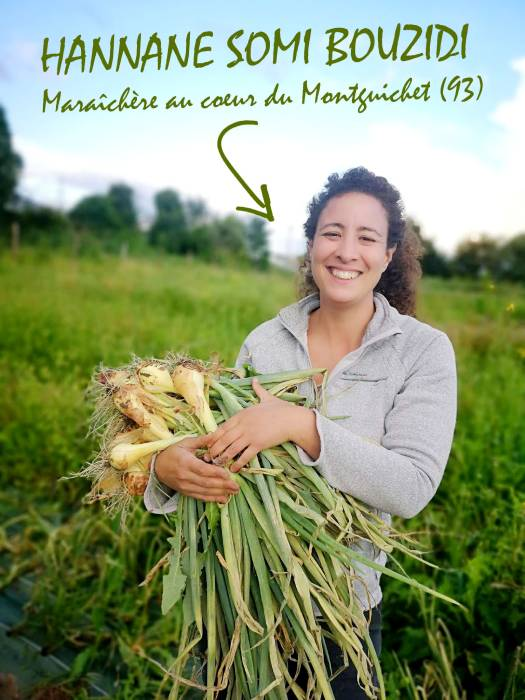
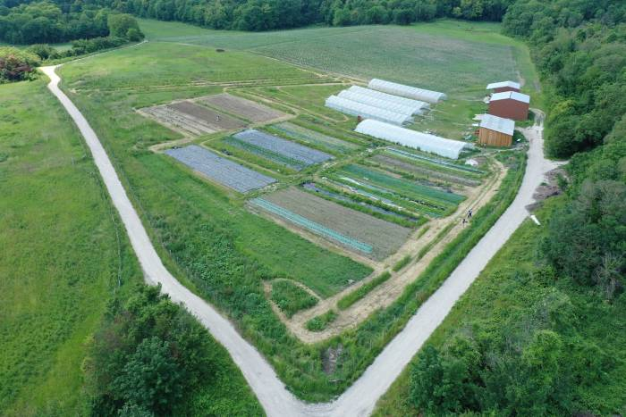
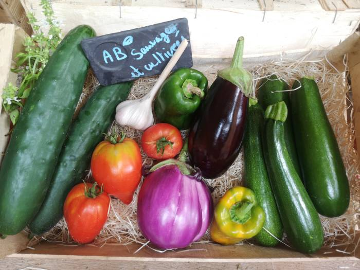
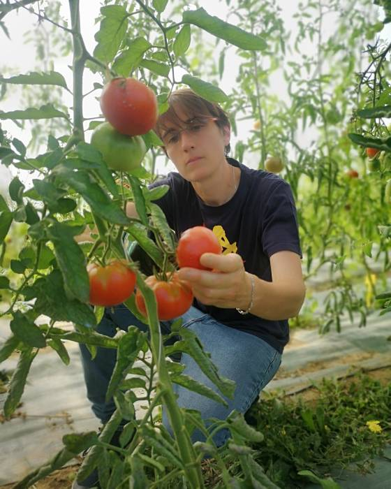
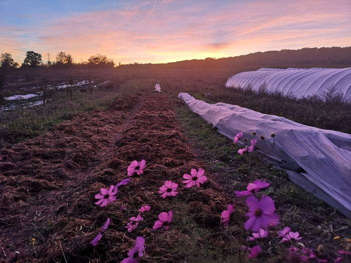
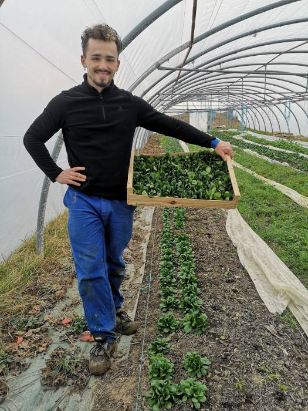
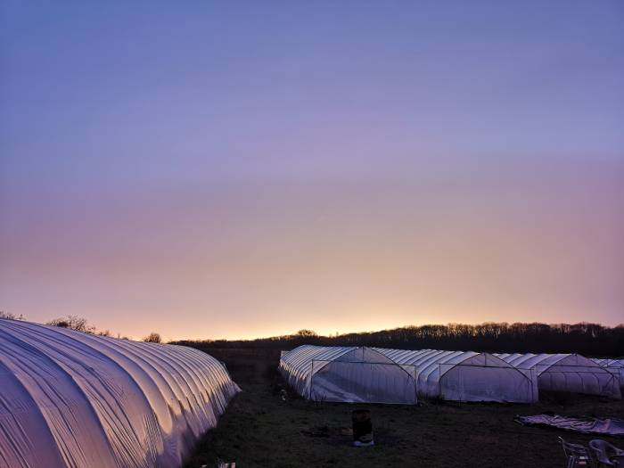
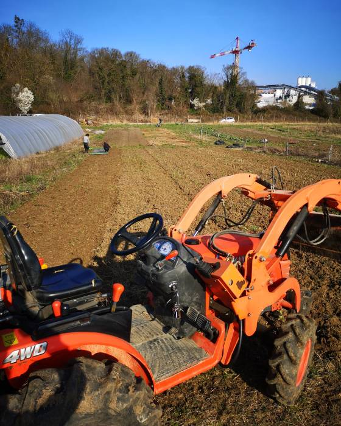
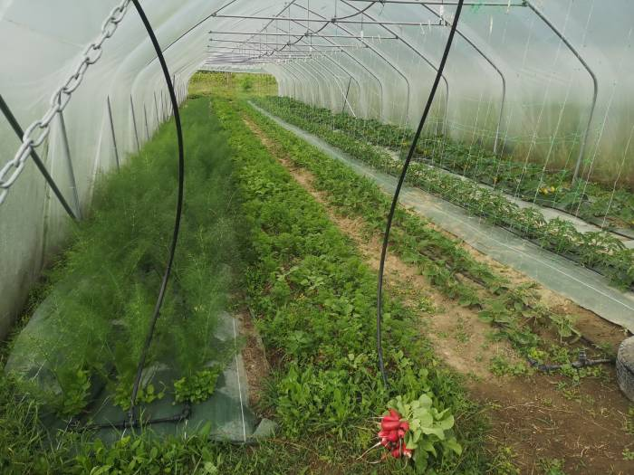
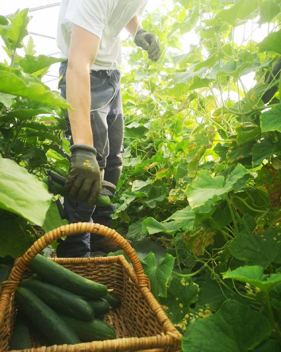
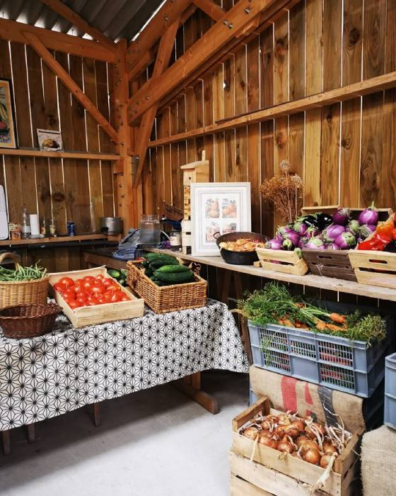
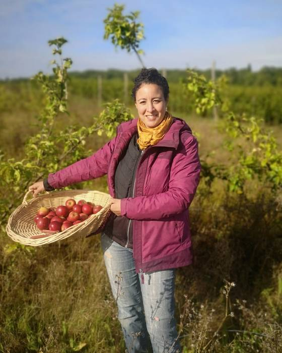
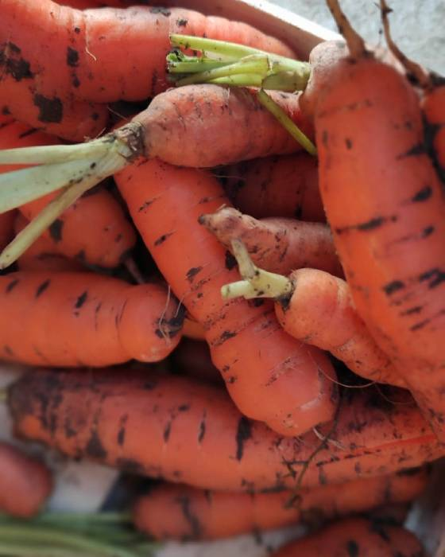
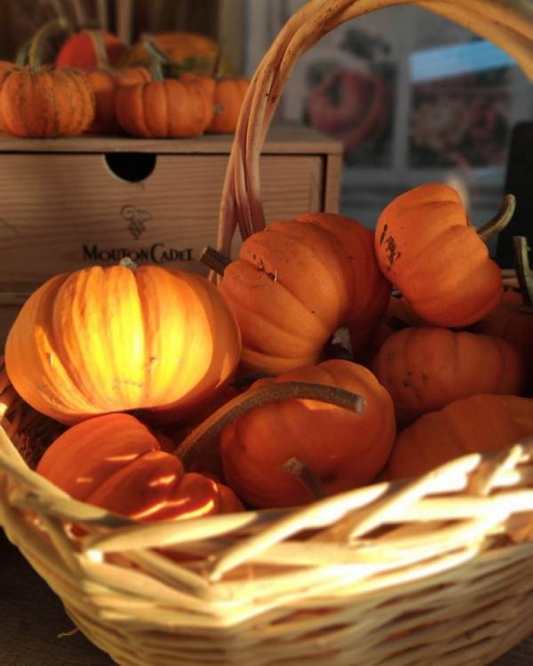
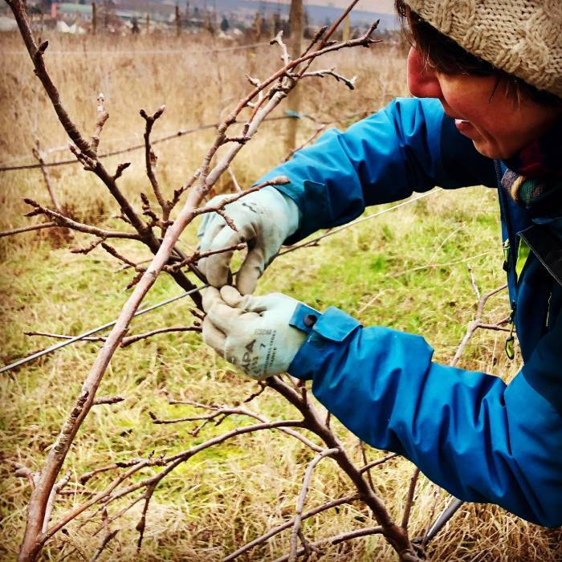
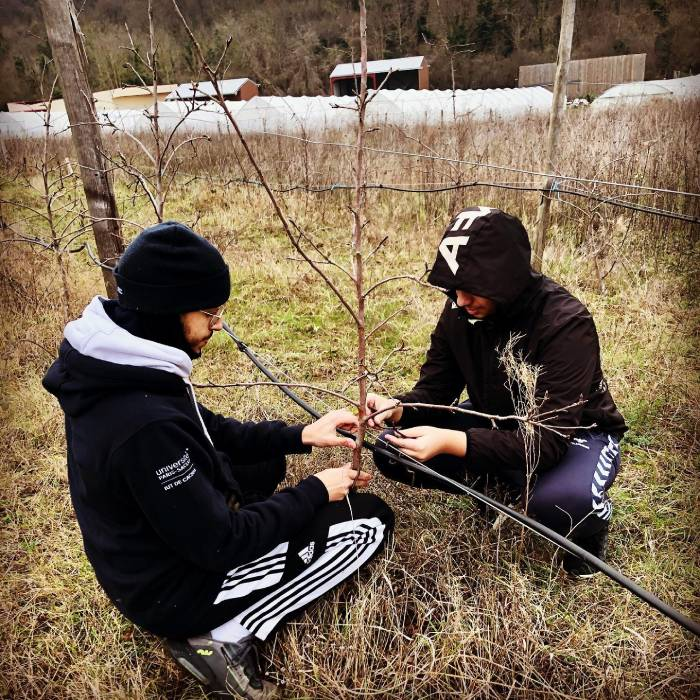